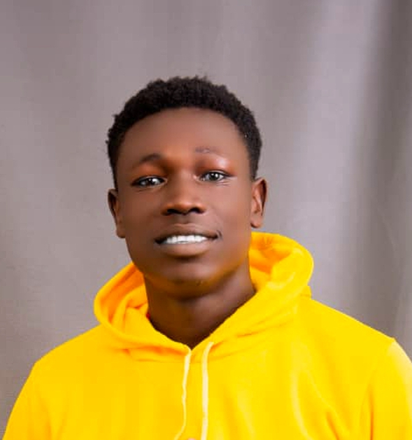

CONTACT
UNIVERSITY COMMUNICATIONI have outstanding communication skills which enabled me to earn the post of General UNSA Speaker at my O'Level studies time. LEADERSHIPI recieved an outstanding certificate of merit for Headprefectship in Kuru Secondary School, Yumbe, and also earned merit with certificate as the Chairperson Christian Community, Kuru Secondary School, as well as a certificate of merit serving as the UNSA Speaker and looking forward to expanding it further in my current Level. |
KAJOKARE
SAMUELREGISTERED STUDENTEDUCATION
Masaloa Nursery and Primary School | Munu Primary School |
Relevant coursework: Web Application Development, Computer Literacy, EXPERIENCE
March 2024-july 2024. I have the best proven records of delivering services services and as well learning faster. I do deliver services willingly to the best of my capability without supervision. REFERENCES
RUBANGAKENE ANDREW ACHIRO JACKLINE OTTO ACEMA NELSON |